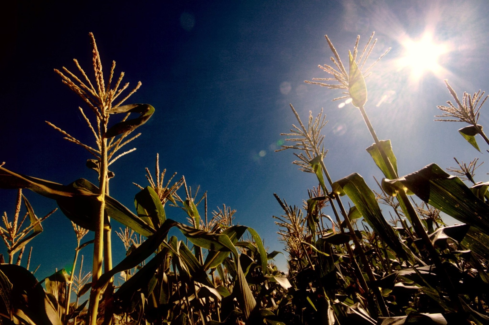

From Scotland
to Scotland.
In 1855, the Welsh family sailed from Aberdeen Harbour to Canada. A month later, they began a new life in a place with a familiar name: Scotland, Ontario. Our family still farms here today.

Sweet corn and asparagus from the land our family has farmed since 1855.
Where to buyIn 1855, the Welsh family sailed from Aberdeen Harbour to Canada. A month later, they began a new life in a place with a familiar name: Scotland, Ontario. Our family still farms here today.

Asparagus by the box, sweet corn by the rack. See pack sizes, seasonal pickup locations and wholesale contacts.